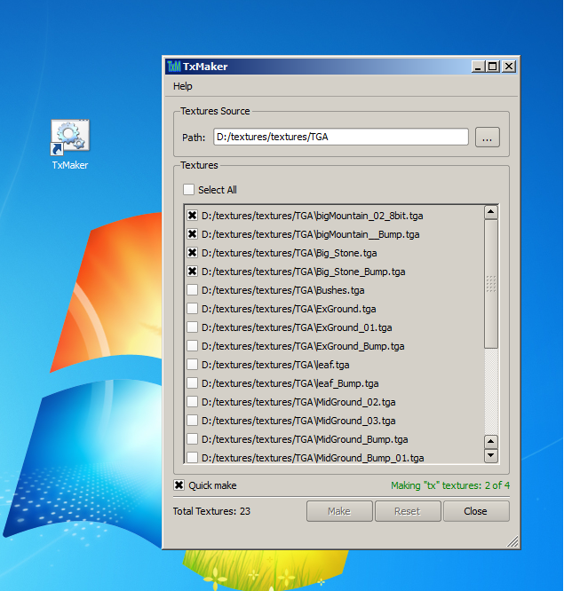

TxMaker is an application to convert different image formats
to tx format as Tx Manager of Arnold does in
Maya. The actual purpose of this application is to make it
easier to convert the formats from outside of Maya. It means you don't
need to open Maya to convert the image formats to tx format. All
you need is to tell the path to directory containing texture files
to TxMaker, it will convert and place the new files in the same
directory as Tx Manager does in Maya.
You can convert the image formats in a controled way, you can tell
TxMaker which images to convert and with what power of your processor.
For exmaple, once you told the textures directory, the TxMaker will
list all the available images in the specified directory.
You can select any number of files to convert them to tx format,
Select All option can be used to convert all the listed files
to tx format.
The Quick Make option lets you select whether you want to
convert the images quickly or with normal speed. When this option is
checked, the TxMaker will utilize 100% of your processor power to
convert the formats. Use this option when you think that you don't
have any other work to do when converting the images. Because this
option will consume all the processor power.
When done with all the options, click the Make button on the
window, it will start converting the images, showing you the
current state of the conversion at the top of Make button.

Finally you can see you directory for the converted images/textures.
Note: If you click the Close button during conversion process, the process of conversion will be stoped.
Copyright (c) 2013 Ice Animations (Pvt.) Ltd